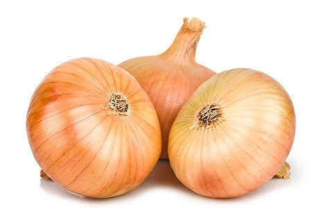
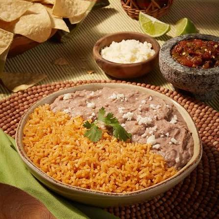

My all time favorite food is Steak Tacos. You can never go wrong with them!
Whether it's street tacos or tacos from my favorite restaurant Superica, they always hit.
If you have any recommendations for good steak tacos in Spokane, Washington email me at the email address listed below!.

Diced white onion adds the perfect sharp flavor and crunchy texture to the tacos.

Cilantro adds a freshness to the taco, and I love cilantro!

Refried beans and rice is the perfect side for these tacos. If you add some to the taco it makes it 10 times better!